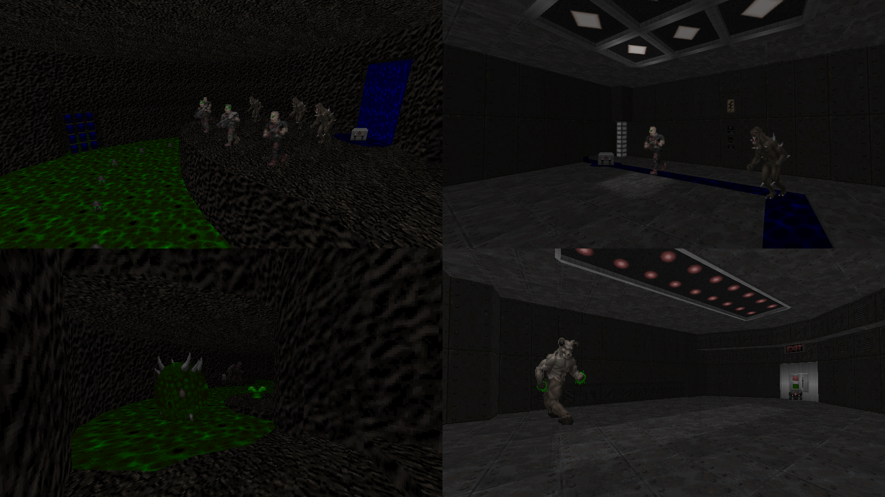

DOWNLOAD LINKS


| Year | 2020 |
| IWAD | doom2.wad |
| Source port | Boom-compatible |
| Game mode(s) | Single-player |
| Map(s) contributed | MAP07 |
Isolation was a community project hosted by Doom community legend Jimmy in March of 2020. The idea was to make a collection of speedmaps under a certain set of restrictions. The project ended up amassing enough maps for two full 32-level megawads, named Strain 1 and Strain 2.
My contribution to the Isolation project was MAP07 of Strain 2, “Cavern Abomination”. It is a small cave/techbase-styled map with straightforward gameplay. Progression in the map leans towards linear, with the player having to find a key in order to open a door that leads to the final combat area and, subsequently, the exit. The experience is accompanied by an original MIDI composition by Yours Truly.